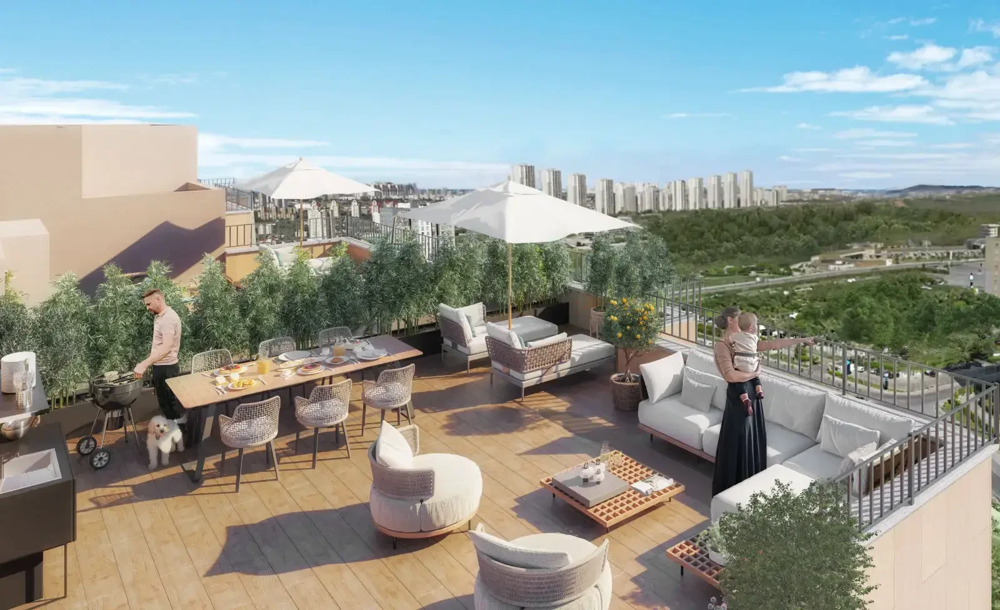

Sinpaş Saklı Koru
A residential project in Atakent built around a landscaped grove and low-rise architecture. The published design combines planted courtyards, water features and outdoor places to walk and relax.
Photo gallery

Official architectural illustrations; these images do not show the current construction condition.
Living spaces
The official presentation includes an indoor swimming pool, social facilities, walking paths, seating areas and viewing terraces within the landscaped grounds.
Atakent · Küçükçekmece · Istanbul
Atakent Mahallesi, 241. Sokak No:3, Halkalı, Küçükçekmece. The project presentation highlights Marmaray and connections to the E-5 and TEM road network.
Choose your home
Request the current apartment selection, price and payment options. Compare the exact unit, view and included services before arranging your purchase.